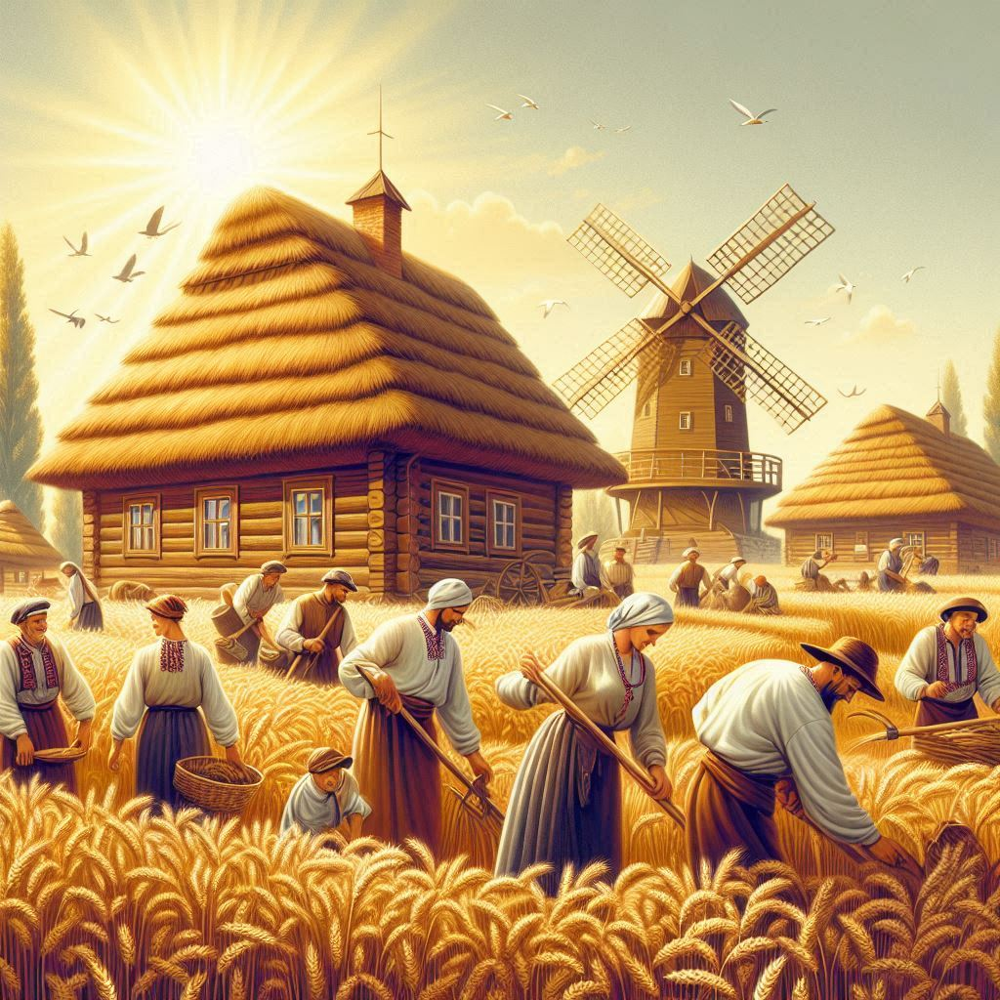
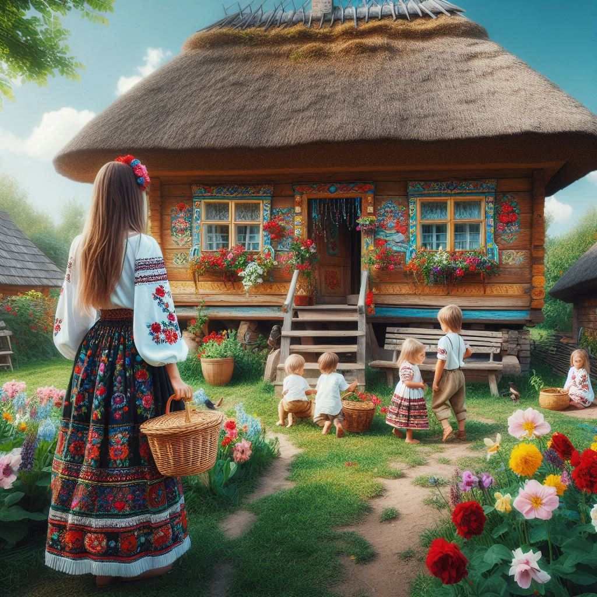
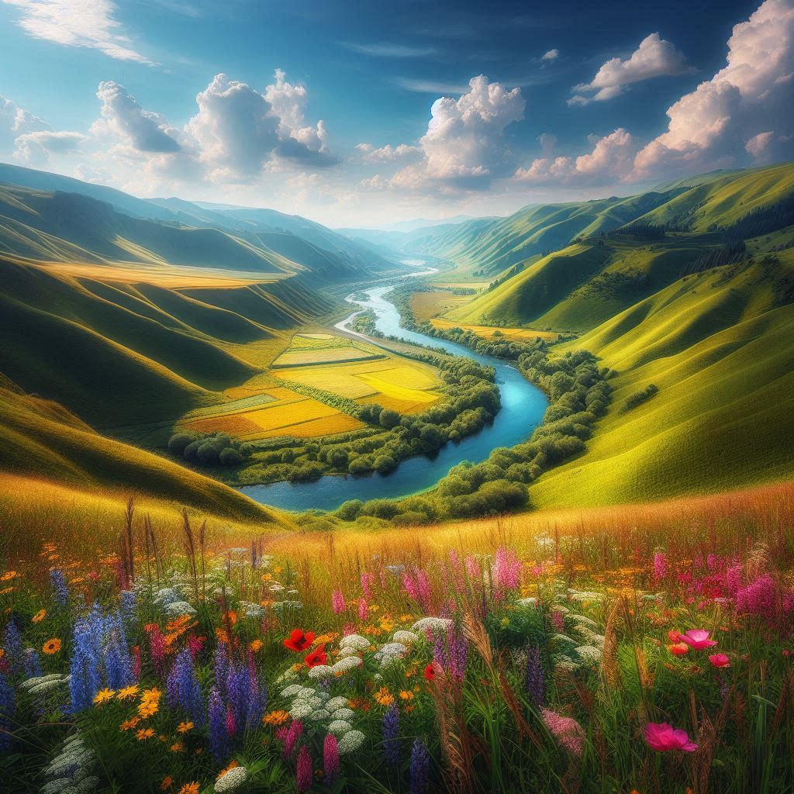
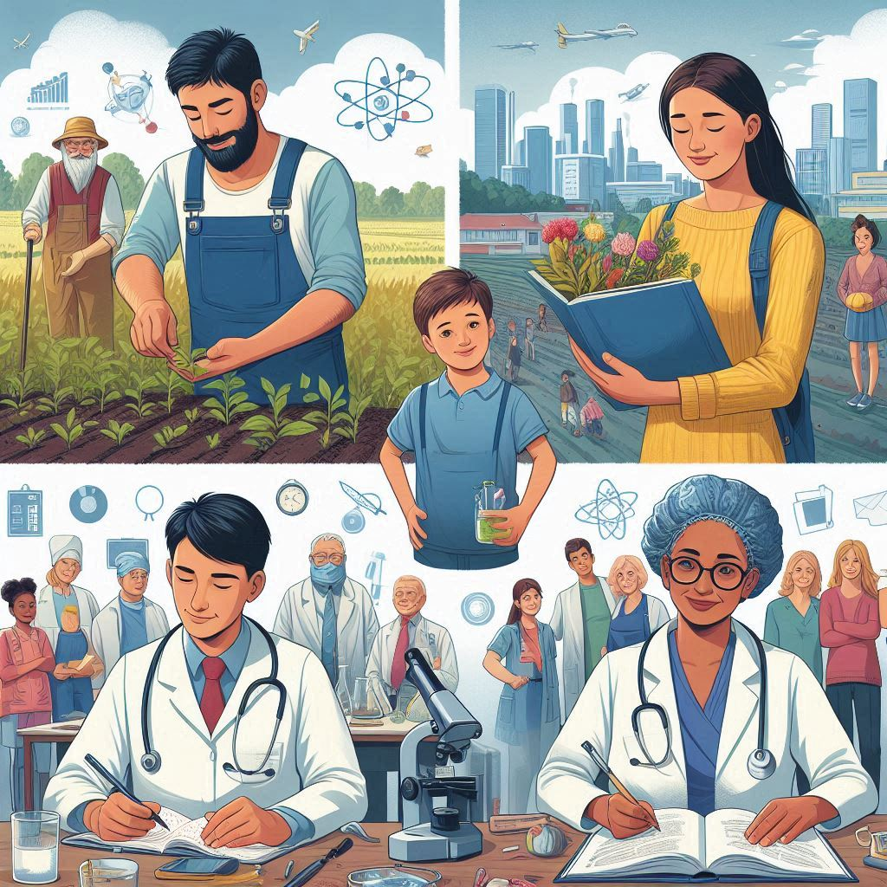

Ukraine: A Land of Resilience and Beauty
Historical Significance
Ukraine's history is long and complex, dating back to ancient times when it was home to the Kyivan Rus', a powerful medieval state that laid the foundation for modern Eastern Slavic nations, including Ukraine, Russia, and Belarus. The Kyivan Rus' was a center of culture and trade, and it was here that Christianity was adopted in 988, shaping the nation's religious and cultural identity for centuries.
Throughout its history, Ukraine has faced numerous invasions and occupations, from the Mongol Empire to the Polish-Lithuanian Commonwealth, the Austro-Hungarian Empire, and the Soviet Union. Despite these challenges, the Ukrainian people have always maintained a strong sense of national identity and a desire for independence. This culminated in Ukraine declaring independence from the Soviet Union in 1991, a pivotal moment in the nation's modern history.
Cultural Heritage
Ukrainian culture is a rich tapestry woven from various influences, including Slavic traditions, European artistry, and religious customs. The country is known for its vibrant folk music, dance, and art. Traditional Ukrainian clothing, particularly the vyshyvanka (embroidered shirt), is a symbol of national pride and is worn during celebrations and holidays.
Ukraine is also famous for its unique culinary heritage, with dishes like borsch (beet soup), varenyky (dumplings), and holubtsi (stuffed cabbage rolls) representing the country's agricultural bounty and deep-rooted traditions. Ukrainian cuisine reflects the country's connection to the land, with hearty meals that sustain the spirit and body.
Natural Beauty
Ukraine's diverse landscapes are nothing short of stunning. From the majestic Carpathian Mountains in the west, where rolling hills and dense forests provide a haven for outdoor enthusiasts, to the golden wheat fields of the central plains that have earned Ukraine the nickname "the breadbasket of Europe," the country's natural beauty is captivating.
In the south, the Black Sea coastline offers sandy beaches and picturesque views, while the northern regions are home to vast forests and rivers. Ukraine's natural reserves, such as the Askania-Nova Biosphere Reserve and the Carpathian National Nature Park, are rich in biodiversity and offer a glimpse into the country’s commitment to preserving its natural heritage.
Modern Challenges and Resilience
In recent years, Ukraine has faced significant challenges, particularly the ongoing conflict with Russia that began in 2014 with the annexation of Crimea and the war in eastern Ukraine. Despite these hardships, Ukraine has shown remarkable resilience. The Ukrainian people have come together to defend their sovereignty and democratic values, and the country has continued to make progress in reforms, particularly in the areas of governance, economy, and human rights.
The 2022 full-scale invasion by Russia further tested Ukraine's strength, but it also revealed the nation's unwavering resolve. Ukrainian soldiers, volunteers, and civilians alike have demonstrated incredible courage and solidarity, defending not only their homeland but also the values of freedom and democracy.
Looking Forward
Ukraine's future is filled with potential. As the country continues to fight for its independence and integrity, it has also strengthened its ties with the international community, particularly with Europe and the West. Efforts to integrate into the European Union and NATO signify Ukraine's aspirations to be part of a broader democratic and prosperous global community.
Despite the difficulties, Ukraine remains a land of opportunity, innovation, and growth. Its vibrant tech sector, rich cultural heritage, and resilient spirit make it a country worth watching as it continues to navigate its path toward peace, stability, and prosperity.